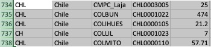
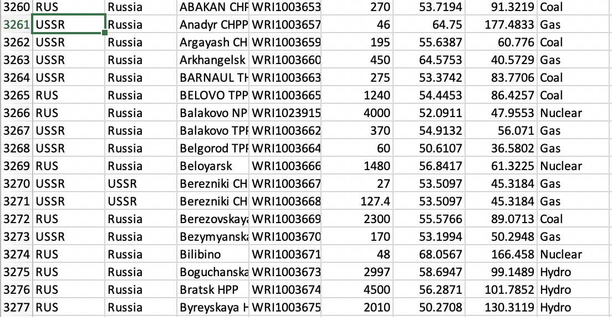
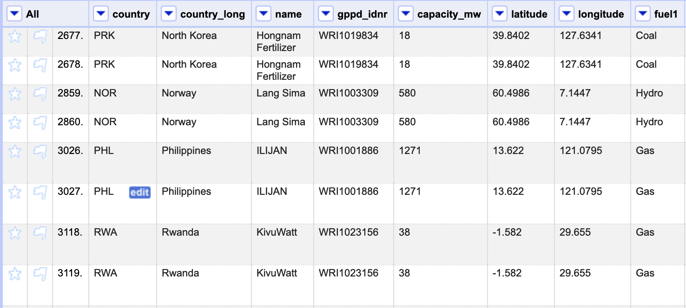
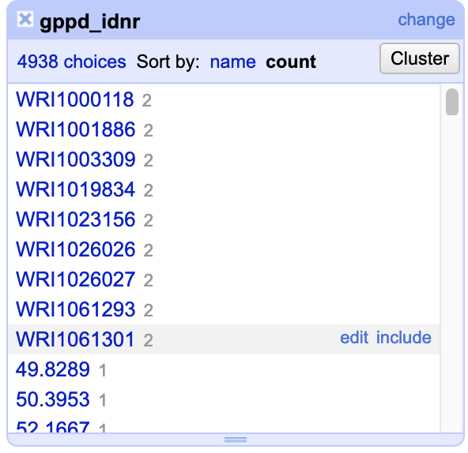
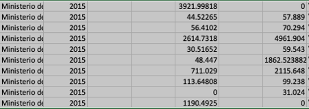
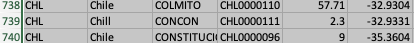
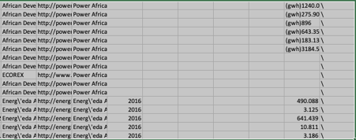
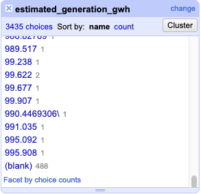
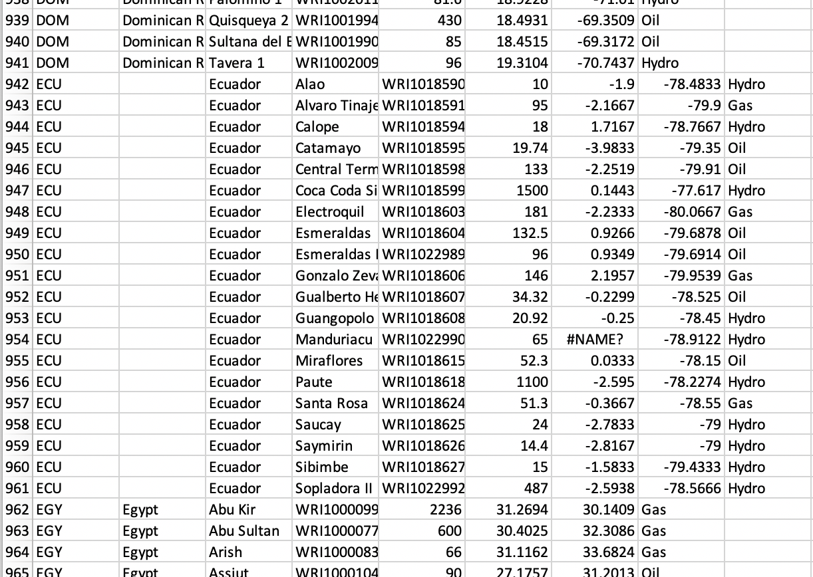
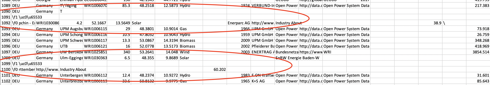

Open Data CW1 Report
ID: 29895162
Name: Weiqin Ding
Abstract
This is a report for the COMP6214 Open Data Innovation, Coursework-1.
Data Cleaning and Manipulation
Tools
Error Types
Scan Through this dataset, there are lots of errors should be corrected. In this part, I list all the errors
first, and in the next part, I will give the tech about how to correct this errors.
- Multiple Representions
For feature “country”, Russia have two type of “country” name in short. The one is “RUS”, the other is
“SSUR”. According to ISO 3166-1, Using “RUS” to represent Russia rather than “SSUR”. Other rows of data have
the same errors like Chile in “CHL” and “CH”.


- Duplication Records
According to feature “gppd_idnr”, the database have duplication records. For instance, “WRI1000118” and 8
other records have their duplicated records.


- Mixed use of Numerical scales
According to feature “estimated_generation_gwh”, there are some records have their value with unit. For
instance, “(gwh)275.90” or “(gwh)896” should correct to “275.90” and “896.00”. Meaning while, their counting
methods are not uniform. For instance, 6 decimal places are reserved for some records, while others kept 4,
3, 2 or only 1 decimal place.

- Spelling Errors
For the features “country_long”, Chile’s name was spelled error as “Chill” .

- Missiong Values
In this dataset, a lot of values are missing. For instance, in feature “country_long”, some countries name
are missing. This kind of missing is easy to correct. What I have do is find these countries name and edit
them in a right way. However, some kind of values missing is hard or even impossible to correct. For
example, in feature “estimated_generation_gwh” there are over four hundreds of records missing it, with some
others are “Nil” or “(blank)”.


- Data Dislocation
Scan all the dataset, some of the row is dislocated. For instance move one cell left from the correct
location.

- Record Split
In this dataset, some record should belong to one row. However, when we check the record we can find they are
split into more than one row.

Solutions or Transformations
From what we find before in rhe "Error Types" part, there are 7 different types of errors. Now I will give my
solutions or transformations to correct those data.
- Multiple Representions
According to ISO 3166-1, Using “RUS” to represent Russia rather than “SSUR”, so I changed all “SSUR” into
“RUS”. Other rows of data have the same errors like Chile in “CHL” and “CH”. Changing those multiple
representations into one specific representation can correct this error.
- Duplication Records
Using "OpenRefine" to find out these duplicated records. Delete rest of the duplicated records and leave
only one of them can fix this error.
- Mixed use of Numerical scales
To correct this, I decided to keep 2 decimal place for the feature “estimated_generation_gwh”. For feature
"longitude" and "latitude", keep 4 decimal place is a good choice. As for "capacity_mw", 2 decimal place is
suitable.
- Spelling Errors
For instance, features “country_long”, Chile’s name was spelled error as “Chill” . To correct this kind of
errors, only need to edit this cell and spelling right.
- Missing Values
In this dataset, a lot of values are missing. For instance, in feature “country_long”, some countries name
are missing. This kind of missing is easy to correct. What I have do is find these countries name and edit
them in a right way. However, some kind of values missing is hard or even impossible to correct. For
example, in feature “estimated_generation_gwh” there are over four hundreds of records missing it, with some
others are “Nil” or “(blank)”. For this kind of missing values, I choose to delete these records.
- Data Dislocation
This kind of error cannot using "OpenRefine" to correct. So, to move those data into where it belongs, I used
"Excel" to correct them.
- Records Split
For this kind of records, at first I tried to correct them by move multi-rows into one row, but there are
still some incomprehensible code. So, I have no choice bu delete them.
Information about Visualisation
- Overview
From this Demo, people who want to get some information about generations all over the world can have a
terse idea. Like which kind of fuel is used mostly in the world, or which fuel is the majority electricity
source of this country, which generation provided the most power in local area. All this information can
easily get from this Demo. If you want more detail information, you can get the generations` url and than
bower their office page.
- Function Description
The legend which located at the right of the map, show out different types of fuel plot by different colors.
You can click each circle point in the legend and show out the specific fuel generation
estimation. And how it deployed in the whole world.
The bottom half of the legend indicates the relationship between the size of the circle and its value.
In the map, you can see different types of circles. Each circle represent a generation.
You can move your mouse over these circles, it will show the details about this generation.
You can zoom in, out and drag the map to the point what you want to see.
Zoom in or out will not impact the circle size, so, if you want to ge more clear vision, you can zoom in.
At the left-up of the map, you can use button or bar to zoom, and reset the map.
- Advantages
- 1.Simple
This Demo is simple enough for every one, from child to senior citizen. Everyone can play with it, you
just need to move, click or drag your mouse and every information you want can plot automatic.
- 2.Intuitively
In this map, I used different color to represent different fuel types. You can also click the legend and
focus on what you real care about. There is no complicated chart bar or numbers for you first sight.
Every thing I want to tell you is on the map. Just move your mouse and get what you want.
- 3.Precisely
This map do not only have dots to represent more than 4k generations around the world, each dot have the
detail about this generation which it stand for. From the name, country, to the estimated generation.
This demo is not just simple.
Reference